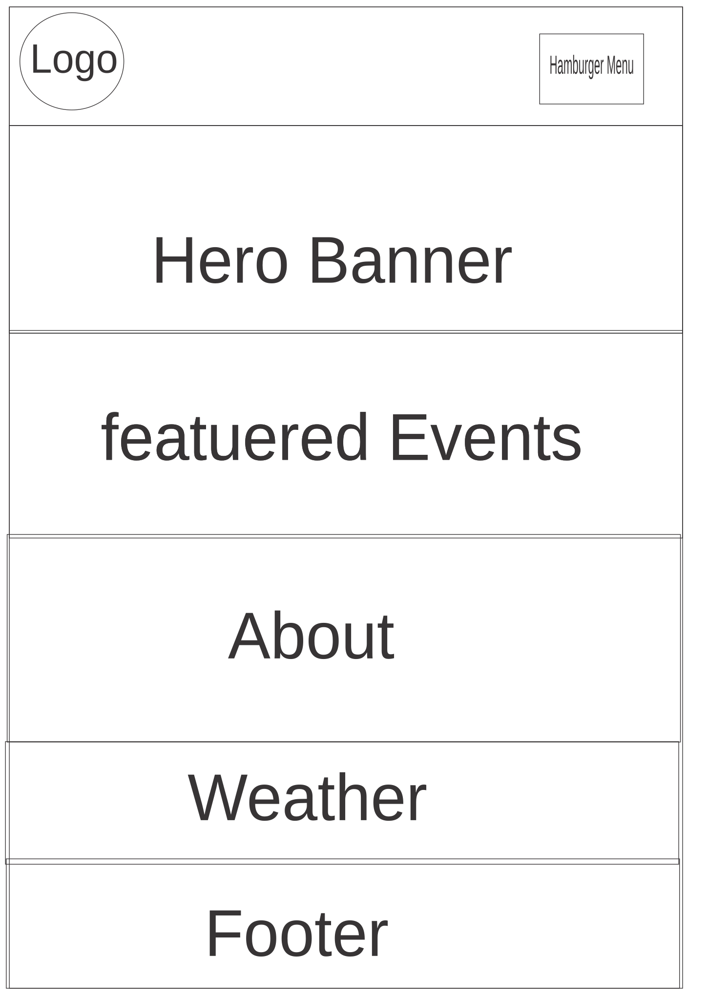
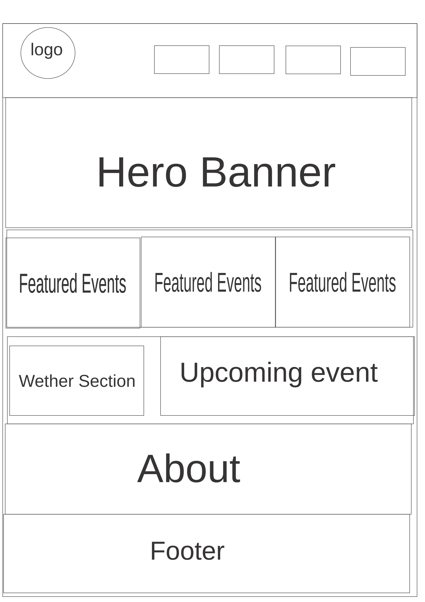

Evently
Evently was selected because it is short, modern, memorable, and clearly communicates the purpose of helping users discover and plan events. The name combines "Event" and a friendly, easy-to-remember ending.
Optional Domain: evently.app
Evently is an event discovery and planning website that helps users find local events, view event details, search and filter events by category, save favorite events, and build a personalized event planner. The website will use JSON data to display events dynamically and provide weather information for event locations through a weather API.

